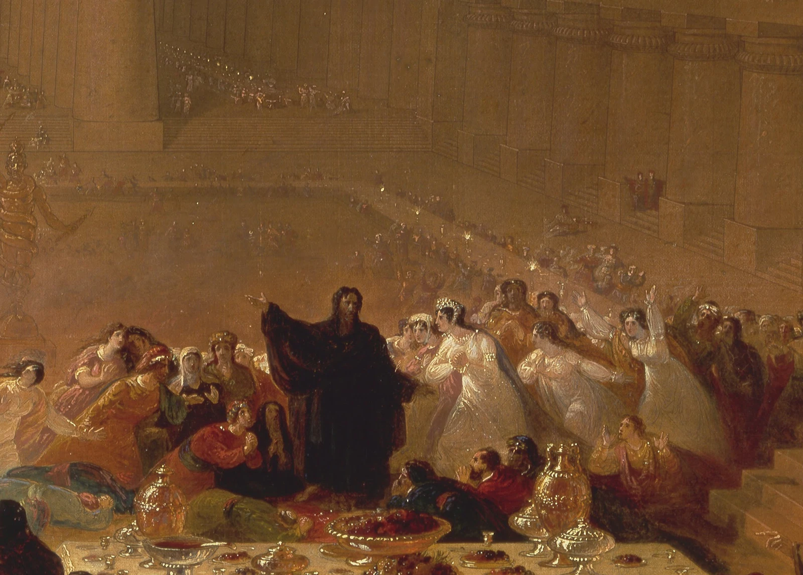
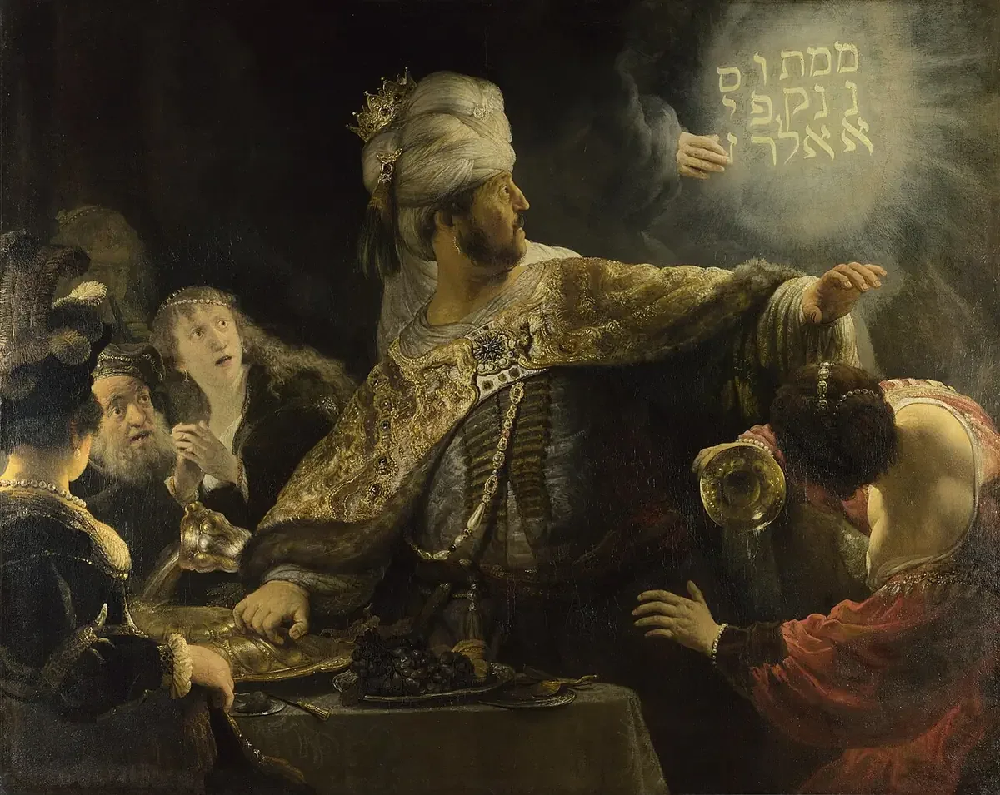
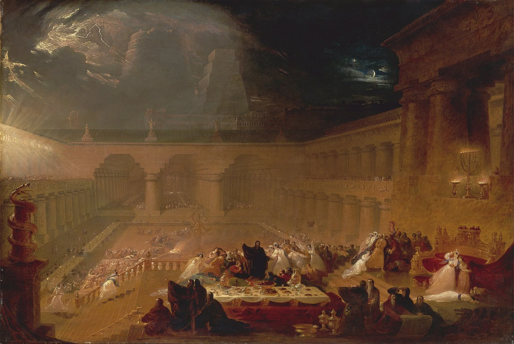
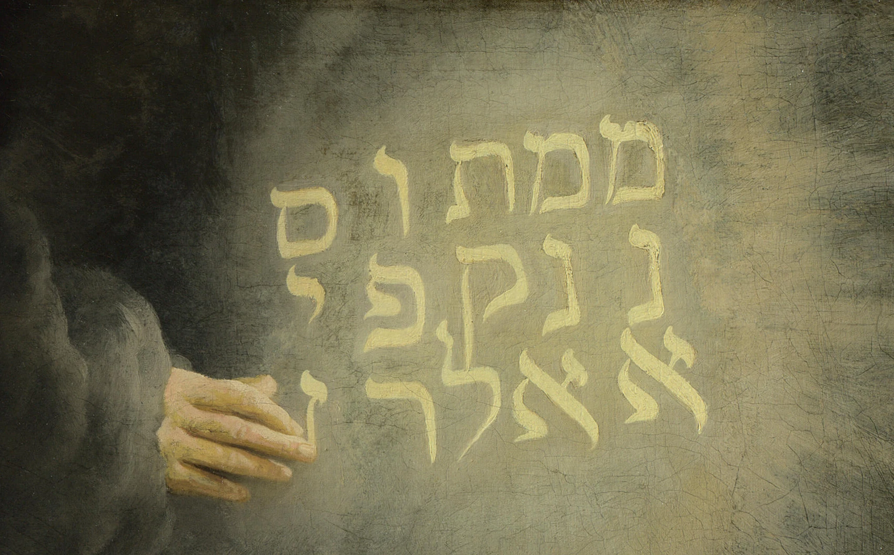
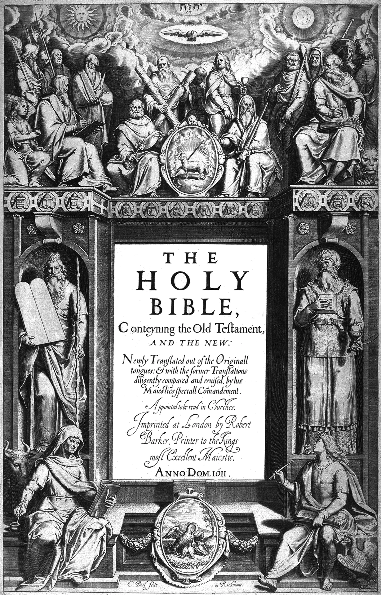
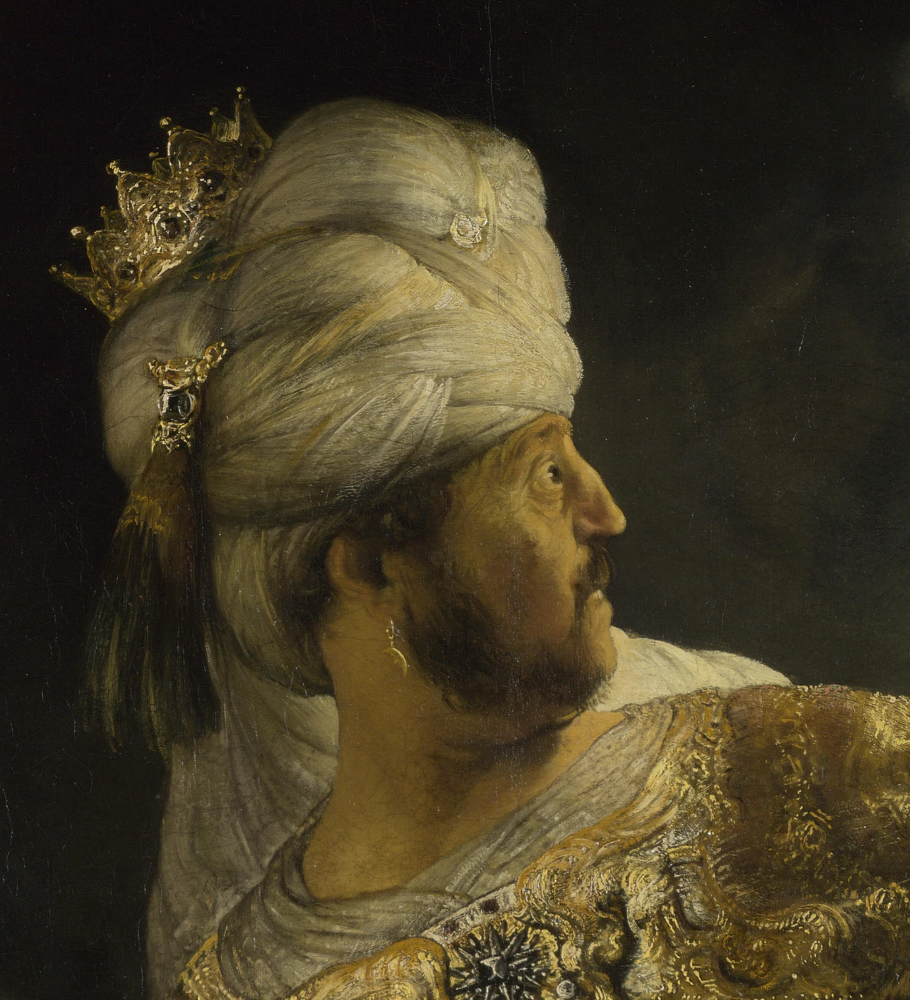
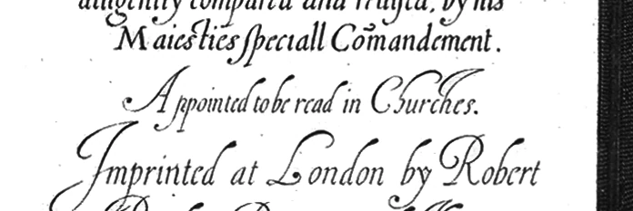

아직 펼치지 않은 카드매일 쓰는 말에 숨은 성경 · 2킹 제임스 성경에서 온 영어 표현영어로 ‘불길한 징조’를 ‘벽에 쓰인 글씨(the writing on the wall)’라고 해요. 이 말은 어떤 이야기에서 왔을까요?영어에 성경에서 온 말이 아주 많대!
다니엘서 5장 · 1611년바빌론 왕궁 · 영국 런던
킹 제임스 성경에서 온 영어 표현
다니엘서에 따르면, 바빌론 왕 벨사살이 귀족 천 명과 잔치를 벌이던 밤 사람의 손가락이 나타나 촛대 맞은편 벽에 글자를 썼어요. 영어에서 ‘불길한 징조’를 뜻하는 ‘the writing on the wall(벽의 글씨)’이 이 장면에서 나왔어요. 어두운 잔칫방을 등불로 비춰, 렘브란트가 그린 그 벽을 찾아보세요.
옛날 바빌론의 임금님이 큰 잔치를 열었는데, 갑자기 손가락이 나타나 벽에 글씨를 썼대. 등불을 들고 그 벽을 찾아볼까?
검수 전 시안이에요(기준서 1판). 장면에는 기록에 있는 것만 옮겼고, 기록마다 다른 것은 그렇다고 밝혔어요. 상상은 ‘눈 감고 상상해 보기’에만 썼어요.
시안 확인용카드 단계 미리 보기
1
천 명의 잔치
다니엘서 5장은 이렇게 전해요. 바빌론의 왕 벨사살이 귀족 천 명을 불러 큰 잔치를 열었어요. 술을 마시던 왕은, 앞선 왕 느부갓네살이 예루살렘 성전에서 빼앗아 온 금그릇과 은그릇을 가져오게 했어요(다니엘서 5장 1~3절).
왕과 손님들은 그 그릇에 술을 따라 마시며 금·은·구리·쇠·나무·돌로 만든 신들을 찬양했어요. 영국 화가 존 마틴은 1820년에 이 밤을 끝이 보이지 않는 궁전으로 그렸어요.

마틴의 그림에서 오른쪽 높은 곳에는 일곱 갈래 등잔대가 타고, 그 맞은편 왼쪽 벽에서 글씨가 빛을 내뿜어요. 가운데 검은 옷을 입고 팔을 든 사람이 다니엘이에요.
마틴의 원작은 1821년 런던의 브리티시 인스티튜션 전시에 걸렸어요. 보러 온 사람이 너무 많아 그림 앞에 울타리를 쳤대요. 그 큰 원작은 지금 개인이 가지고 있고, 여기 실은 것은 마틴이 절반 크기로 그린 같은 그림이에요.
임금님이 잔치를 열었는데, 손님이 천 명이나 왔대!
물어보기그림 왼쪽 벽에서 빛나는 글씨가 보여? 오른쪽 위의 등잔대도 찾아볼까?
2
촛대 맞은편 벽
그때 사람의 손가락들이 나타나, 왕궁 촛대 맞은편 석회벽에 글자를 썼어요. 석회벽은 하얀 석회 반죽을 바른 벽이에요. 손가락을 본 왕은 얼굴빛이 변하고, 무릎이 서로 부딪쳤어요(다니엘서 5장 5~6절).
네덜란드 화가 렘브란트는 1636~1638년 무렵 이 순간을 그렸어요. 어두운 그림을 등불로 비춰, 벽의 글자와 그 앞의 사람들을 찾아보세요.
손가락이나 마우스로 어두운 그림을 문질러, 등불로 잔칫방을 비춰 보세요.
렘브란트 「벨사살의 잔치」, 1636~1638년 무렵, 런던 내셔널 갤러리 · 그림: 렘브란트 · 퍼블릭 도메인 · 위키미디어 공용
빛이 닿으면 숨은 표시가 나타나요.
렘브란트는 손이 나타나 벽에 글을 쓰는 바로 그 순간을 그렸어요. 다니엘서는 그날 밤 벨사살 왕이 죽임을 당했다고 전해요(5장 30절).
“…wrote over against the candlestick upon the plaister of the wall…”
킹 제임스 성경, 다니엘서 5장 5절
킹 제임스 성경은 이 벽을 ‘plaister of the wall(벽의 회반죽)’이라고 옮겼어요. 영어에서 이 장면은 ‘the writing on the wall(벽의 글씨)’, 곧 피할 수 없는 일이나 다가오는 위험을 알리는 징조라는 말이 되었어요.
이렇게 비유로 쓴 예는 18세기 초부터 보여요. 조너선 스위프트의 1720년 글에는 “’Tis like the Writing on the Wall(벽의 글씨 같다)”이라는 줄이 있어요.
잔치하는데 갑자기 손가락이 나타나 벽에 글씨를 썼어! 임금님은 너무 놀라서 무릎이 덜덜 떨렸대.
물어보기등불로 비춰서, 벽에 글씨 쓰는 손을 찾아볼까?
3
세고, 달고, 나누고
왕의 지혜자들이 모두 왔지만, 아무도 그 글자를 읽지 못했어요. 마침내 불려 온 다니엘이 글자를 읽었어요. ‘메네 메네 데겔 우바르신’(다니엘서 5장 8·25절).
다니엘은 이렇게 풀었어요. 메네는 하나님이 왕의 나라의 날을 세어 끝내셨다는 뜻, 데겔은 왕을 저울에 달아 보니 모자랐다는 뜻, 베레스는 나라가 나뉘어 메대와 바사(페르시아)에 넘어간다는 뜻이에요(5장 26~28절).

킹 제임스 성경은 데겔의 풀이를 ‘Thou art weighed in the balances, and art found wanting’(너는 저울에 달렸고, 모자람이 드러났다)이라고 옮겼어요.
그런데 왜 아무도 읽지 못했을까요? 유대 랍비들의 토론과 가르침을 모은 탈무드에는 여러 풀이가 남아 있어요. 그 가운데 랍비 슈무엘은 글자가 세로줄로 쓰여서, 가로로 읽으면 뜻 모를 소리가 되었다고 풀었어요.
렘브란트의 글자도 세로줄이에요. 오른쪽 줄부터 위에서 아래로 읽으면 ‘메네 메네 데겔 우바르신’, 가로로 읽으면 슈무엘이 말한 ‘맘토스 난카페이 아알란’이 돼요.
아무도 못 읽은 글자를 다니엘이 읽었어. ‘세었다, 달아 봤다, 나뉜다’라는 뜻이래.
물어보기글자가 세로로 몇 줄 서 있는지 세어 볼까?
4
교회에서 읽도록
1611년 런던에서 새 영어 성경이 나왔어요. 1604년 햄프턴 코트 회의에서 새 번역을 하자는 요청이 나왔고, 제임스 1세 왕이 그 일을 맡아 후원했어요. 그래서 ‘킹 제임스 성경’이라고 불러요.
속표지 가운데 칸 아래쪽에 ‘Appointed to be read in Churches(교회에서 읽도록 정함)’라는 줄이 보여요.

언어학자 데이비드 크리스털은 이 성경에서 오늘 영어로 퍼진 표현을 257개 찾았어요. 그 가운데 이 성경에만 있는 것은 18개뿐이었어요. 나머지는 한 세기쯤 앞선 틴들의 번역처럼, 먼저 나온 영어 성경에 이미 있던 말이었어요.
크리스털은 이 성경이 ‘교회에서 읽도록’ 정해진 책이어서, 그 말들을 모든 사람 앞에 널리 내놓았다고 설명해요. ‘아슬아슬하게’를 뜻하는 ‘by the skin of your teeth’도 1560년 제네바 성경에 먼저 나왔고, 킹 제임스 성경을 거쳐 관용구가 되었어요.
‘이의 살갗’이라는 이 말은 히브리어를 낱말 그대로 옮긴 거예요. 같은 구절을 개역개정은 ‘겨우 잇몸뿐’이라고 옮겼어요(욥기 19장 20절).
400여 년 전 영국 교회에서 소리 내어 읽은 성경이야. 그래서 그 말들이 영어에 쏙쏙 남았대.
물어보기그림 가운데에서 ‘THE HOLY BIBLE’이라는 큰 글씨를 찾아볼까? 양옆에 선 두 사람도 보여?
5
하나님이 함께하시기를
헤어질 때 하는 ‘goodbye’는 성경 구절이 아니라, ‘하나님이 함께하시기를(God be with you)’이라는 축복 인사가 줄어든 말이에요. 옥스퍼드 영어 사전이 찾은 가장 이른 예는 1573년, 학자 가브리엘 하비의 편지예요.
“To requite your gallonde of godbwyes, I regive you a pottle of how-dyes.”
가브리엘 하비의 편지, 1573년 · 옥스퍼드 영어 사전의 가장 이른 예(영어 낱말 누리집 그래머포비아)
우리말로 옮기면 “당신이 보낸 한 갤런의 godbwye에 답해, 나는 반 갤런(포틀)의 how-dye를 돌려드리오”예요(이 안내서가 옮김). 갤런과 포틀은 들이를 재는 단위로, 포틀은 갤런의 절반이에요. how-dye는 ‘how do ye?(잘 지내시오?)’가 줄어든 안부 인사예요.
옥스퍼드 영어 사전은 ‘good’이 ‘good day’, ‘good night’ 같은 인사를 닮아 ‘God’ 자리에 들어갔을 거라고 짐작해요. 셰익스피어의 1598년 희곡 「사랑의 헛수고」에는 ‘God be wy you’가 나와요. 긴 인사와 줄어든 ‘goodbye’는 1800년대 초까지 함께 쓰였어요.
‘굿바이’는 원래 ‘하나님이 함께하시길’이라는 인사였어. 헤어지는 사람에게 복을 빌어 준 거야.
물어보기너는 친구랑 헤어질 때 뭐라고 인사해?
눈 감고 상상해 보기
1611년 무렵, 영국의 오래된 돌 교회를 떠올려 보세요. 나무 의자, 창으로 들어오는 희미한 빛. 앞에서 누군가 새 성경을 펴고 또박또박 읽어요. “MENE, MENE, TEKEL, UPHARSIN.” 낯선 말이 돌벽에 울리고, 사람들은 그 밤의 이야기를 들어요.
눈을 감아 봐. 오래된 돌 교회에서 누가 큰 책을 소리 내어 읽고 있어. “메네, 메네, 데겔….” 어떤 소리로 들릴까?
나의 자리
헤어질 때 내가 건네는 인사에는 어떤 마음이 담겨 있나요?
헤어질 때 친구에게 뭐라고 인사해?
마음에 닿는 한 줄을 고르거나 직접 써 보세요. 한 줄을 남기면 이 자리의 도장이 찍혀요. 이 기기에만 저장돼요.
더 깊이
이야기를 보다 궁금해질 만한 것들이에요. 답을 읽거나 짧은 영화로 보세요.

그날 밤, 정말 글씨대로 나라가 넘어갔어요?

‘the writing on the wall’이 킹 제임스 성경에 그대로 있어요? 이 성경은 무엇을 한 거예요?
뒷이야기
아직 펼치지 않은 이야기예요. 누르면 이야기가 펼쳐지고 색이 돌아와요. 더 알고 싶으면 근거를 따라가 보세요.
다 펼치면, 다음에 오실 때 새 이야기가 찾아와요.
오늘의 뒷이야기는 여기까지예요. 다음에 오시면 새 이야기가 기다리고 있어요.
펼친 뒷이야기 · 누르면 다시 볼 수 있어요
더 찾아보기
기록마다 다른 점
벨사살의 아버지 다니엘서는 느부갓네살을 벨사살의 ‘부친’, ‘부왕’이라고 불러요(5장 2·13절). 바빌론에 남은 글들에는 벨사살이 나보니두스 왕(기원전 555~539년 재위)의 맏아들로 나와요. 아버지가 기원전 550년에 떠나며 그에게 왕좌와 군대 대부분을 맡겼고, 그는 기원전 539년 바빌론이 페르시아에 넘어갈 때 죽었어요.
메나세가 도왔을까 그림은 1636~1638년 무렵인데, 같은 배열이 실린 메나세의 책은 1639년에 나왔어요. 2021년 렘브란트 하우스 연보에서 나들러와 티리바스는, 렘브란트가 다리를 건너 메나세를 찾아가 물었을 가능성이 아주 높다고 봐요. 미술사학자 게리 슈워츠는 반대로, 메나세가 도왔다면 마지막 글자가 틀린 채 남지 않았을 거라고 해요. 끝 글자 ‘눈’(ן) 자리에 비슷한 ‘자인’(ז)이 그려졌다는 거예요.
1636년 판화 내셔널 갤러리 도록(1991년)은 렘브란트가 1636년에 메나세의 초상을 판화로 새겼다고 적어요. 나들러와 티리바스는 그 판화가 메나세의 초상이 아니라는 주장이 학자들 사이에 이어져 왔다고 써요.
‘킹 제임스 성경에서 온’ 말 많은 글이 이런 표현을 ‘킹 제임스 성경에서 왔다’고 해요. 크리스털이 센 257개 가운데 이 성경에만 있는 것은 18개였고, 나머지는 먼저 나온 번역에도 있었어요. 그래서 이 카드는 ‘킹 제임스 성경이 널리 퍼뜨린 말’로 썼어요.
이의 살갗 욥기의 히브리어 ‘베오르 신나이’는 낱말 그대로 ‘내 이의 살갗으로’예요. 영어 성경들은 그대로 옮겼고, 라틴어 불가타 성경은 앞뒤 뜻이 통하게 다르게 옮겼어요. 개역개정은 ‘잇몸’을 골랐어요.
직접 보기
확인한 날 · 2026년 11월 18일 · 바뀌기 쉬운 정보라 정기적으로 다시 확인해요
렘브란트의 「벨사살의 잔치」는 영국 런던 내셔널 갤러리에 있어요. 존 마틴이 절반 크기로 그린 「벨사살의 잔치」는 미국 뉴헤이븐의 예일 영국 미술 센터에 있어요.
전시 여부는 바뀔 수 있으니, 보러 가시기 전에 미술관 누리집에서 확인해 주세요.
등불로 다 비추기 금박
등불로 잔칫방을 비춰 숨은 표시 다섯 곳을 모두 찾으면 카드에 금박이 입혀져요.
등불로 비춰 표시 다섯 곳을 모두 찾기
아이와 함께 끝까지 채색
아이와 함께 ‘영화처럼 보기’를 끝까지 보면 카드가 채색돼요.
아이와 함께 ‘영화처럼 보기’를 끝까지 보기
근거 보기 (21)
- 대한성서공회 개역개정: 다니엘서 5장 — 귀족 천 명의 잔치(1절), 예루살렘 성전의 금·은 그릇(2~3절), 신들을 찬양(4절), 촛대 맞은편 석회벽의 손가락(5절), 얼굴빛과 무릎(6절), 지혜자들이 읽지 못함(8절), 귀족들도 놀람(9절), 부친·부왕(2·13절), 메네 메네 데겔 우바르신과 풀이(25~28절), 그날 밤(30절)
- 대한성서공회 개역개정: 욥기 19장 20절 — ‘겨우 잇몸뿐’
- 바이블게이트웨이 KJV: 다니엘서 5장 — 5절 ‘over against the candlestick upon the plaister of the wall’, 27절 ‘weighed in the balances, and art found wanting’
- 바이블게이트웨이 KJV: 욥기 19장 20절 — ‘I am escaped with the skin of my teeth’
- 런던 내셔널 갤러리: Belshazzar’s Feast — 1636~1638년 무렵, 손이 나타나 벽에 글을 쓰는 순간, 성전에서 빼앗은 그릇, 글자 모양은 친구 메나세 벤 이스라엘(랍비·인쇄업자)의 책에서
- 내셔널 갤러리 도록(매클래런·브라운 1991): 세로로 오른쪽부터 읽는 글자, 메나세의 1639년 책에 같은 배열, 1636년 판화와 1639년 이사, 터번과 지운 얼굴(고친 자국), 1736년 노즐리 홀, 1964년 구입
- 렘브란트 하우스 연보 2021(나들러·티리바스): 메나세의 1639년 도표가 그림과 꼭 닮음, 다리 건너 찾아갔을 가능성, 게리 슈워츠의 반론(자인과 끝 눈), 1636년 판화 초상에 대한 의심
- 세파리아: 바빌로니아 탈무드 산헤드린 22a — 글을 읽지 못한 까닭 다섯 풀이, 슈무엘은 세로로 씀(가로로 읽으면 맘토스 난카페이 아알란)
- 브리태니커: Belshazzar — 나보니두스(555~539년 재위)의 맏아들, 550년 왕좌와 군대를 맡음, 539년 바빌론이 페르시아에 넘어갈 때 죽음, 다니엘서는 느부갓네살의 아들이라고 부름, 글은 아람어
- 브리태니커: 제임스 1세가 킹 제임스 성경을 썼나요? — 직접 쓰지 않고 후원, 1604년 햄프턴 코트 회의의 청에서 시작
- 데이비드 크리스털(2010, 『Begat』): The King James Bible and the English Language — 257개 표현, 이 성경에만 있는 것은 18개, 나머지는 틴들 등 앞선 번역, ‘교회에서 읽도록’ 정해져 널리 퍼짐
- 워드오리진스: skin of one’s teeth — 1560년 제네바 성경, 1611년 킹 제임스 성경, 히브리어 bĕʿōr šinnāi, 낱말 그대로 옮긴 말, 불가타는 다르게 옮김
- 프레이즈 파인더: the writing is on the wall — 다니엘서 5장, ‘handwriting on the wall’·‘mene mene’, 18세기 초부터 비유, 스위프트 1720년
- 그래머포비아(2011): goodbye — God be with you의 줄임, good day·good night의 영향, 1573년 하비의 편지, 포틀은 갤런의 절반, 1598년 셰익스피어 God be wy you, 1800년대 초까지 함께 씀
- 어원 사전 Etymonline: howdy — how do ye?의 줄임, 1570년대 howedye(good-bye와 짝)
- 메리엄웹스터: pottle — 반 갤런(1.9리터)들이
- 예일 영국 미술 센터: 존 마틴 Belshazzar’s Feast — 1820년, 캔버스에 유채, 80×120.7cm, ‘J. Martin 1820’ 서명, 폴 멜런 컬렉션
- 아메리칸 대학 논문 사이트: Belshazzar’s Feast 소개 — 1821년 브리티시 인스티튜션 전시, 몰린 사람들 때문에 울타리, 원작 160×249cm 개인 소장, 예일 것은 절반 크기, 다니엘이 가운데
- 위키미디어 공용: 렘브란트 「벨사살의 잔치」 사진 정보
- 위키미디어 공용: 존 마틴 「벨사살의 잔치」 사진 정보(구글 아트 프로젝트)
- 위키미디어 공용: 1611년 킹 제임스 성경 속표지 — 열두 사도, 모세와 아론, 네 복음서 저자, 비둘기(판화가 코르넬리스 보엘)
그림·사진·소리 출처
- 그림: 렘브란트 · 퍼블릭 도메인 · 위키미디어 공용
- 그림: 존 마틴 · 퍼블릭 도메인 · 위키미디어 공용
- 그림: 렘브란트 · 퍼블릭 도메인 · 위키미디어 공용
- 판화: 코르넬리스 보엘 · 퍼블릭 도메인 · 위키미디어 공용
- 그림: 렘브란트 · 퍼블릭 도메인 · 위키미디어 공용
- 그림: 렘브란트 · 퍼블릭 도메인 · 위키미디어 공용
- 그림: 렘브란트 · 퍼블릭 도메인 · 위키미디어 공용
- 그림: 렘브란트 · 퍼블릭 도메인 · 위키미디어 공용
- 그림: 존 마틴 · 퍼블릭 도메인 · 위키미디어 공용
- 그림: 존 마틴 · 퍼블릭 도메인 · 위키미디어 공용
- 판화: 코르넬리스 보엘 · 퍼블릭 도메인 · 위키미디어 공용
- 판화: 코르넬리스 보엘 · 퍼블릭 도메인 · 위키미디어 공용
- 판화: 코르넬리스 보엘 · 퍼블릭 도메인 · 위키미디어 공용
- 판화: 코르넬리스 보엘 · 퍼블릭 도메인 · 위키미디어 공용
- 그림: 렘브란트 「벨사살의 잔치」, 런던 내셔널 갤러리 · 퍼블릭 도메인 · 위키미디어 공용
‘처음 만나는 기독교 문화’의 깊은 카드예요. 실제 인물의 사진은 쓰지 않았어요. 카드 단계와 남긴 글은 이 기기에만 저장돼요.